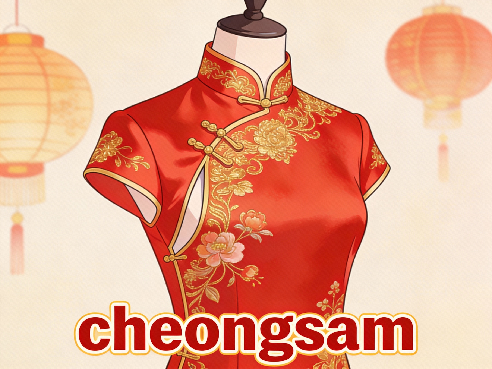
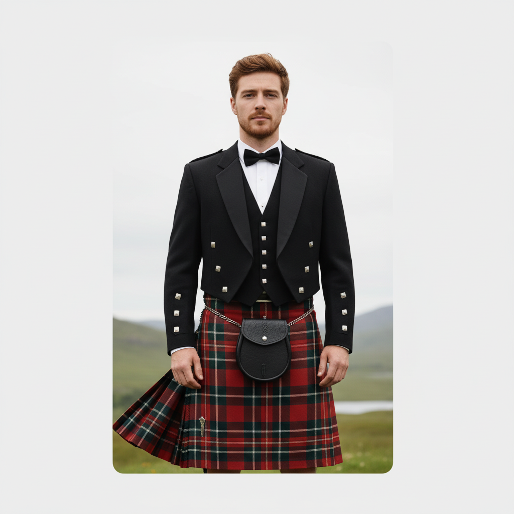
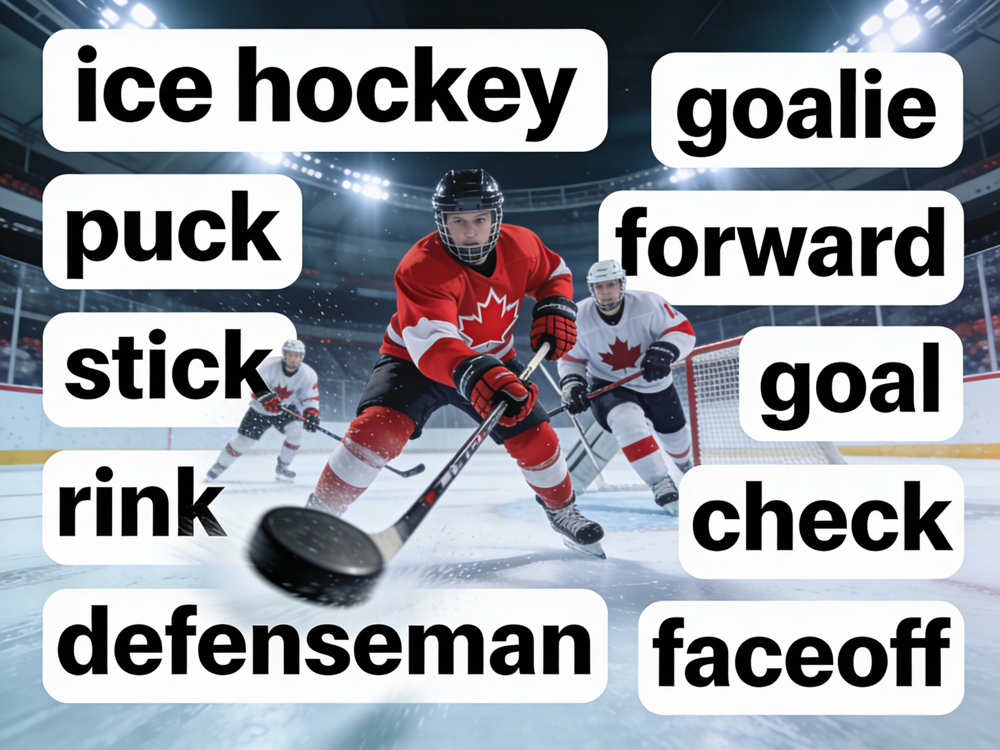
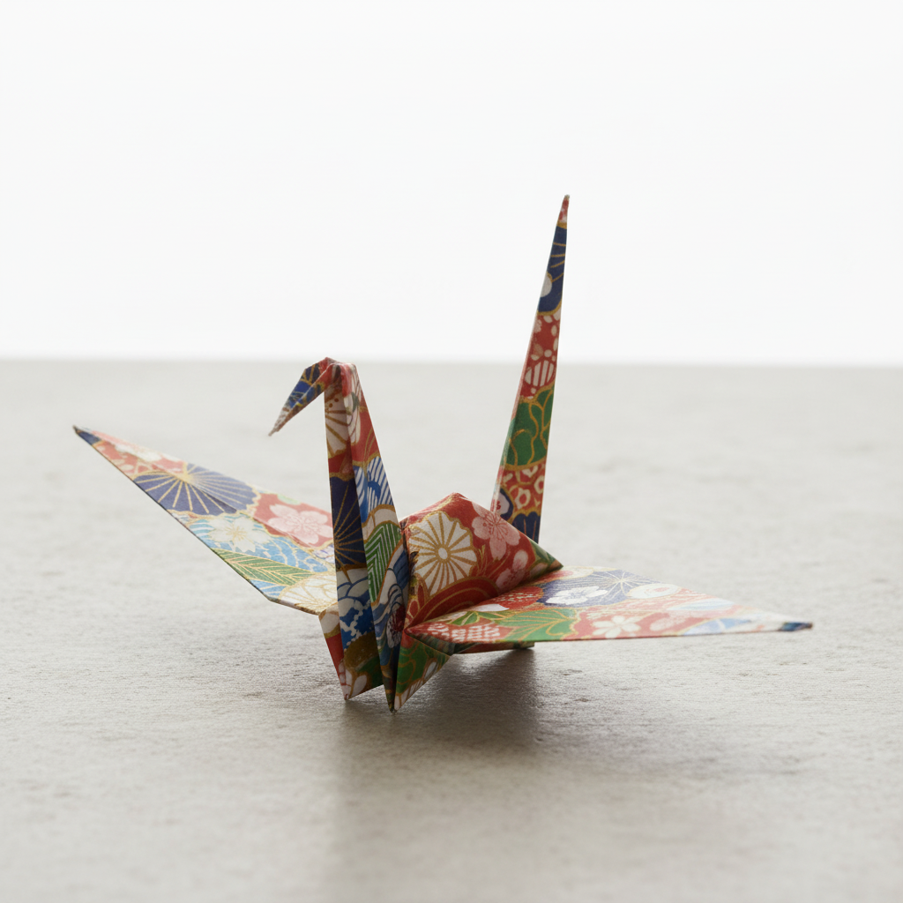
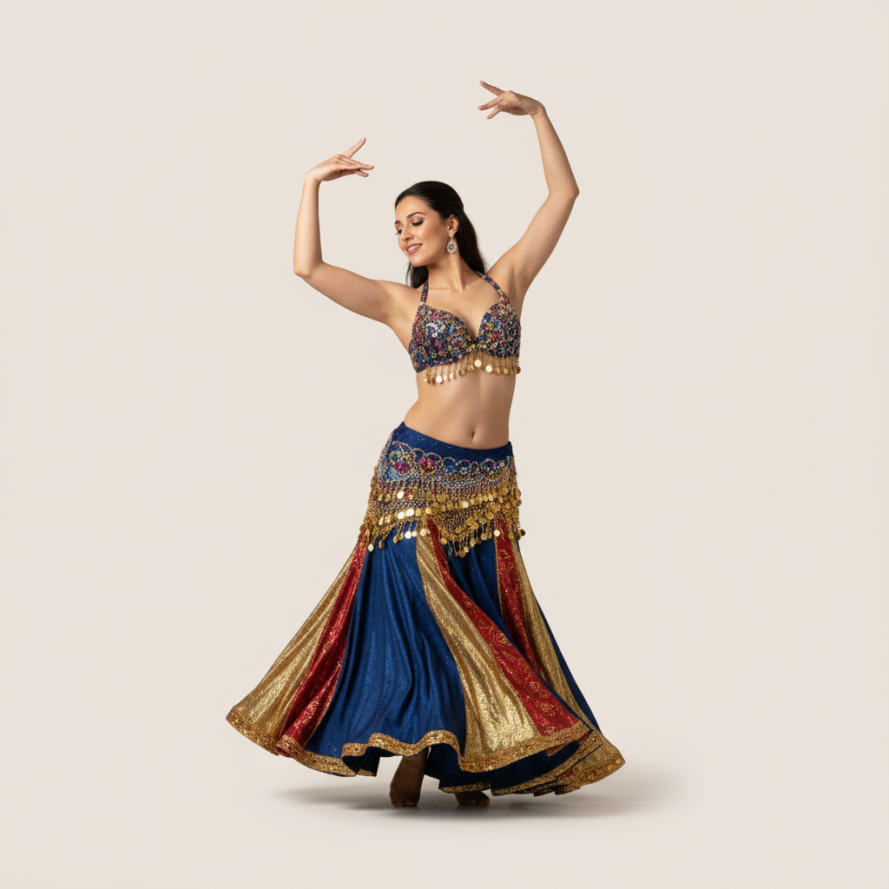

a cheongsam
Definition:
A form-fitting traditional Chinese dress with a high neck and side slits, often worn for special occasions.
Example:
She looked elegant in her red cheongsam at the wedding celebration.

a kilt
Definition:
A knee-length pleated skirt, traditionally worn by men in Scotland, featuring tartan patterns.
Example:
At the Highland Games, the dancers wore colorful kilts/ and performed traditional dances.

an ice Hockey
Definition:
A fast-paced team sport played on ice with sticks and a puck, central to Canadian culture.
Example:
Canada's ice hockeyb> team won the Olympic gold medal with exceptional teamwork.
a kimono
Definition:
A traditional Japanese garment with square sleeves, wrapped front, and an obi sash belt.
Example:
She wore an elegant silk kimonob> during the cherry blossom festival.

Origami
Definition:
The Japanese art of paper folding to create intricate shapes like cranes, flowers, and animals.
Example:
Children learn origami in school to make paper cranes symbolizing peace and longevity.

kimchi
Definition:
A spicy fermented Korean dish made from vegetables, typically cabbage, with chili peppers and seasonings.
Example:
Every Korean meal includes kimchi for its tangy, spicy flavor and health benefits.
Carnival
Definition:
A festive celebration featuring parades, masquerades, and elaborate costumes, especially famous in Venice.
Example:
Venice's carnival draws thousands of visitors with colorful floats and mysterious masked balls.

Venetian Mask
Definition:
An ornate, decorative disguise worn during Carnival, traditionally made with velvet, gold, and intricate designs.
Example:
She donned an ornate Venetian mask for the mysterious carnival ball.

an African Drums
Definition:
A percussion instrument used in African music, including varieties like djembe, talking drums, and frame drums.
Example:
The village celebration featured energetic rhythmic beats from traditional African drums.
Samba
Definition:
A Brazilian rhythm and dance originating in Bahia, featuring syncopated beats and hip movements, central to carnival.
Example:
Rio's carnival pulses with vibrant samba music and energetic dancers.

belly Dance
Definition:
A Middle Eastern dance form featuring isolated movements of the hips, belly, and torso, with origins in Turkey and surrounding regions.
Example:
Performers showcase fluid belly dance movements with shimmies and undulations.

rock Music
Definition:
A guitar-driven music genre originating in the USA, blending blues, country, and rhythm & blues elements.
Example:
Rock music exploded globally in the 1950s with legendary artists like Elvis Presley.